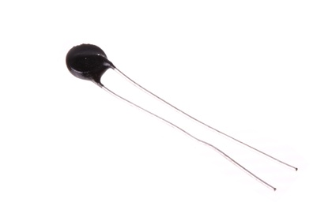
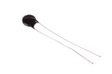
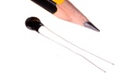

6.5 mm Thermistor - TH65D

Summary
Name: 6.5 mm Thermistor
ID: THER-65D-X-STAN-01
Hex ID: TH65D
WebPage: https://github.com/oomlout/oomlout-OOMP/wiki/THER-65D-X-STAN-01
Short URL: http://oom.lt/TH65D
Revision History: https://github.com/oomlout/oomlout-OOMP/blob/master/parts/THER-65D-X-STAN-01/
| Type |
Size |
Color |
Description |
Index |
THER
Thermistor |
65D
6.5 mm |
X
|
STAN
|
01
|
Images


About
This part is awaiting a description.
Specifications
| Info |
Value |
| Type |
Thermistor |
| Size |
6.5 mm |
Extra Details
Spotted a mistake, want to add more? Let us know oomp@oomlout.com
All images and resources are licensed [CC BY-SA] unless otherwise stated (ie. the datasheets)